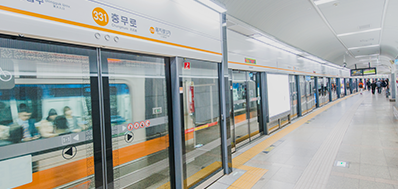
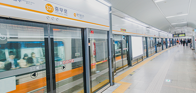

Your Best Memories
Seoul Travel
Go where Changdeokgung palace vs, spring outing? You can choose a guided tour on the schedule that I want to short courses.
SEOUL TRAVEL


NSEOUL TOWER
Sky observation deck, revolving restaurant N GRILL, such as restaurant reservations hankuk guidence, the more traffic information.
For any travel booking the best trip.
Ride the cable car to go to Namsan Park Go up to the top filled with love locks also saw made You are overlooking the panoramic view of Seoul at a glance.
Namsan Tower in Namsan Park
Seoul Tower has too many tourist and crowds, there is little cherry. I think that is below Namsan Park as the best place on the road that leads around to enjoy the cherry blossoms. The perimeter road that leads down to the Namsan Tower in Namsan Park and the Namsan Library Bus Stop.
 

It started in autumn outing to Myeongdong fun, Namsan cable car, finished in the autumn night view of Seoul N Tower!
Maple also reported seeing an animated character! Autumn Stroll kill two birds with one stone picnic spots in the Nanshan 'fun'